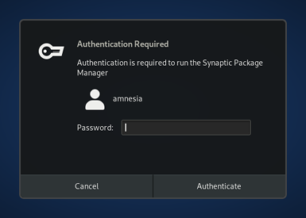

In Tails, an administration password (also called root password or amnesia password) is required to perform system administration tasks. For example:
- To install additional software
- To access the internal hard disks of the computer
- To execute commands with sudo

Security implications of setting up an administration password
For better security, no administration password is set up by default.
When you set up an administration password, an attacker who learns your administration password could be able to break all the security measures built in Tails:
- Monitor all your activity
- Reveal your IP address
- Access all the data in your Persistent Storage
- Write data to the internal hard disk of the computer
- Install such vulnerabilities permanently on your Tails USB stick
To learn your administration password, an attacker could:
Watch your keyboard while you type your administration password, for example through a video surveillance camera, and then accessing physically your computer before you shut down Tails.
To prevent such an attack:
- Hide your keyboard while typing your administration password in public spaces.
- Never leave your computer unattended while running Tails.
- Learn how to quickly shut down Tails.
Exploit a security vulnerability in an application in Tails before you type your administration password.
For example, an attacker could exploit a security vulnerability in Thunderbird by sending you a phishing email that could wait until you type your administration password and reveal it.
Such an attack is very unlikely but could be performed by a strong attacker, such as a government or a hacking firm.
To prevent such an attack:
- Only set up an administration password when you need it.
- Always update to the latest version of Tails to fix known vulnerabilities as soon as possible.
We have plans to fix the root cause of this problem but it requires important engineering work.
Set up an administration password
In order to perform administration tasks, you need to set up an administration password when starting Tails, using the Welcome Screen.
When the Welcome Screen appears, click on the
 button.
button.
Choose Administration Password in the Additional Settings dialog.
Specify a password of your choice in both the Administration Password and Confirm text boxes then click Add.
For security, it is impossible to set up an administration password after starting Tails. Otherwise, a compromised application could bypass some of the security built in Tails.
How to open a root terminal
To open a root terminal during your working session, you can do any of the following:
Choose .
Execute sudo -i in a terminal.